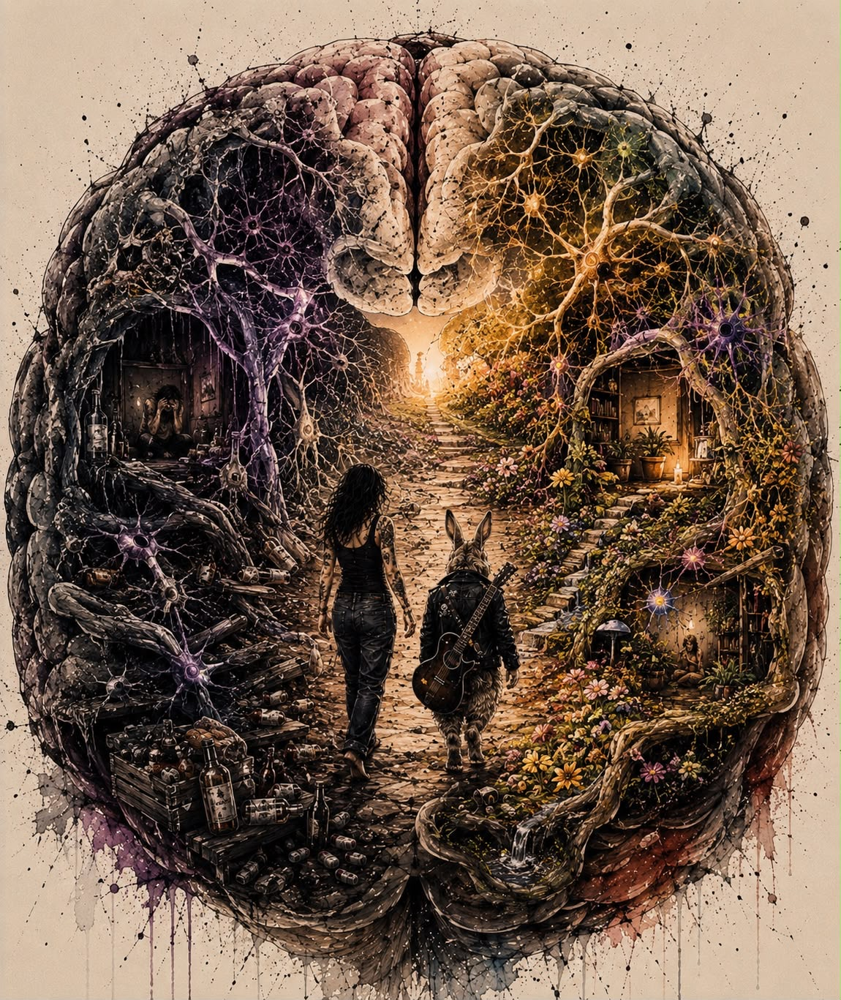

Vi kan jo gi det et år, sa jeg til Percy da vi møttes.
Et år er lenge.
Det er en hel syklus.
Fire årstider med alt det innebærer.
Percy kaller seg selv alkis.
Han har drukket øl så lenge han kan huske.
Han er en typisk velfungerende alkoholiker. Han har en god jobb, familie og barn. Han er musiker, kreativ og et av de mest omsorgsfulle menneskene jeg kjenner.
Han er bare, sånn som meg, så innmari hard mot seg selv.
I går sa han at han måtte slutte å rusromantisere. At han hadde begynt å innbille seg at livet i aktiv rus egentlig ikke var så ille. At han i hvert fall slapp denne flatheten og mangelen på glede som han kjenner på nå.
Jeg tror mange av oss kjenner oss igjen i det.
For hjernen vår er merkelig.
Den husker sjelden angsten klokken fire om natta.
Den husker ikke skammen dagen etter.
Den husker ikke alle gangene vi lovte oss selv at «i morgen skal jeg slutte».
Den husker bare det første glasset.
Den lille følelsen av lettelse.
Percy er som meg. Og som oss alle som sitter på møtene. Og kanskje som deg som leser dette nå.
Vi kjemper mot vår egen hjerne.
En hjerne som romantiserer og prøver å overbevise oss om at ett glass sikkert går fint.
Ja, hjernen er smart.
Men den er også lat.
Den elsker snarveier.
Og alkohol er en veldig effektiv snarvei.
Så hva er det egentlig som skjer med kroppen når vi slutter å drikke?
Hva er det som skjer det første året?
Det fascinerer meg.
Jo mer jeg har lest om dette, desto mindre har jeg tenkt at jeg var svak.
Og desto mer har jeg forstått at kroppen faktisk gjør akkurat det den er skapt til å gjøre.
Når vi gir hjernen alkohol jevnlig for å roe den ned, gjør vi den egentlig en bjørnetjeneste.
Når den oppdager at alkoholen ordner avslapningen for den, trenger den ikke lenger å produsere like mye av sine egne beroligende signalstoffer.
Den tilpasser seg.
Etter mange år med alkohol kan hjernen derfor få redusert evnen til å finne den samme roen på egen hånd.
Det var noe av det som overrasket meg mest.
Jeg trodde jeg hadde drukket fordi jeg var stresset.
I dag tror jeg ofte det var motsatt.
Jeg var stresset fordi hjernen min hadde vent seg til at alkohol skulle skape roen.
Langvarig alkoholbruk kan også føre til tap av både grå substans – selve hjernecellene – og hvit substans, som er forbindelsene mellom dem.
Dette rammer særlig frontallappen, som hjelper oss med impulskontroll, planlegging og vurderinger, og hippocampus, som er viktig for hukommelsen.
Det er derfor mange beskriver en slags hjernetåke.
At ordene ikke kommer like lett.
At hukommelsen svikter.
At hodet føles tregere.
Jeg trodde lenge det bare var meg som begynte å bli sliten.
At livet var hektisk.
Kanskje var noe av det sant.
Men alkoholen hadde nok en mye større rolle enn jeg ville innrømme.
Alkohol påvirker også balansen mellom to av hjernens viktigste signalsystemer.
Den forsterker GABA, som er hjernens bremsesystem, og demper glutamat, som fungerer som hjernens gasspedal.
For å kompensere begynner hjernen gradvis å skru ned sin egen brems og bygge opp en sterkere gasspedal.
Resultatet blir en hjerne som etter hvert trenger alkohol bare for å føles normal.
Det er derfor mange kjenner uro, rastløshet eller angst når alkoholen går ut av kroppen.
Ikke fordi de plutselig har blitt svakere.
Men fordi hjernen fortsatt prøver å finne tilbake til balansen.
Og det tar tid.
Alkohol er heller ikke bare belastende for hjernen.
Den er giftig for nervesystemet ellers i kroppen også. Nervene som blant annet styrer fordøyelse, blodtrykk og hjerterytme, kan bli påvirket over tid.
Den uroen eller rastløsheten du kanskje begynner å kjenne i femtiden på ettermiddagen?
Jeg trodde lenge det bare var hverdagsstress.
At det var jobb.
Unger.
Regninger.
Livet.
Men ofte er det ikke det.
Ofte er det hjernen som har glemt hvordan den skal finne ro uten det glasset den har blitt vant til.
Og det er egentlig ganske håpefullt.
For hvis hjernen har lært det én gang, kan den lære noe nytt igjen.
«Jeg sover så mye bedre etter et glass.»
Den tanken hadde jeg mange ganger.
Og hvis jeg skal være helt ærlig, så føltes det jo sant.
Jeg sovnet raskere.
Det var nesten som om noen skrudde av hodet mitt.
Men fysiologisk er alkohol en elendig søvnmedisin.
Det tok lang tid før jeg forsto det.
Det som faktisk skjer, er at alkoholen hjelper deg med å sovne – men den stjeler den søvnen hjernen din trenger aller mest.
Den dype søvnen.
Drømmesøvnen.
Det er i disse fasene hjernen rydder opp, sorterer minner, bearbeider følelser og reparerer seg selv.
Og så skjer det noe ganske merkelig.
Rundt tre–fire om natten har leveren som regel gjort unna det meste av alkoholen.
Da forsvinner den kunstige bremsen.
Kroppen reagerer med en liten stressrespons.
Du våkner kanskje.
Du kjenner at du er varm.
Tankene begynner å kverne.
Kanskje sovner du igjen.
Men morgenen etter føler du deg likevel ikke uthvilt.
Jeg trodde lenge at jeg sov godt.
I virkeligheten var jeg bare bevisstløs litt tidligere enn jeg ellers ville vært.
Det er ganske stor forskjell.
Selv om alkoholforbruket ditt aldri blir så høyt at du utvikler skrumplever, må kroppen likevel jobbe på høygir hver eneste natt.
Når vi sover, er det egentlig da kroppen skal få fred.
Den skal reparere celler.
Bygge opp immunforsvaret.
Bearbeide dagens inntrykk.
Regulere hormoner.
Brenne fett.
Men ligger det alkohol i systemet, må leveren slippe alt den holder på med.
Den prioriterer én ting:
Å fjerne giften.
Den tar rett og slett aldri helg.
Jeg liker egentlig å tenke på leveren som den mest lojale medarbeideren vi har.
Den klager aldri.
Den bare jobber.
Dag etter dag.
Natt etter natt.
Helt til den en dag sier at nå klarer den ikke mer.
Resultatet etter mange år er ofte ganske snikende.
Ikke dramatisk.
Bare en følelse av at kroppen aldri er helt på plass.
En lett hjernetåke.
Litt dårligere energi.
En kropp som føles oppblåst.
Et nervesystem som alltid virker å stå litt på tomgang.
Jeg trodde dette var normalt.
Jeg trodde det var sånn det var å bli voksen.
Jeg tok feil.
Det fine er at kroppen vår er utrolig tilgivende.
Den ønsker faktisk å bli frisk.
Den er ikke ute etter å straffe oss.
Den begynner å reparere seg nesten med én gang vi gir den muligheten.
Og det synes jeg er ganske vakkert.
Hvis du ikke har drukket så mye at du utvikler alvorlige abstinenser, vil kroppen ofte starte en imponerende reparasjonsprosess allerede de første dagene.
Ikke fordi det blir lett.
Men fordi kroppen endelig får gjøre den jobben den egentlig har prøvd å gjøre hele tiden.
Etter noen dager kan innsovningen fortsatt være litt vanskelig.
Hjernen må lære seg å finne bremsen selv igjen.
Men når du først sovner, begynner den ekte søvnen sakte å komme tilbake.
Den søvnen som gjør at du faktisk våkner og kjenner at kroppen har hvilt.
Ikke bare ligget i sengen.
Etter et par uker opplever mange at hjernetåken begynner å lette.
Konsentrasjonen blir skarpere.
Tankene blir klarere.
Det emosjonelle overskuddet kommer sakte tilbake.
Humøret svinger ikke fullt så voldsomt.
Jeg husker ikke én morgen hvor jeg våknet og tenkte:
«Nå er jeg frisk.»
Det skjedde ikke sånn.
Det skjedde nesten uten at jeg la merke til det.
Plutselig en dag oppdaget jeg bare at jeg hadde mer energi.
At jeg lo litt lettere.
At jeg orket litt mer.
Og det er kanskje akkurat sånn kroppen reparerer seg.
Stille.
Uten fanfare.
Etter omtrent en måned har leveren fått ryddet unna mye av det den har jobbet med.
Hos mange vil en fettlever begynne å trekke seg tilbake dersom alkoholen var årsaken. Huden kan få mer glød fordi kroppen ikke lenger er kronisk dehydrert, og den konstante følelsen av uro eller hjertebank på formiddagen blir ofte mindre.
Det er nesten rart hvor fort kroppen begynner å takke deg.
Ikke fordi alt blir perfekt.
Men fordi den endelig får bruke kreftene sine på deg.
Ikke på alkoholen.
Jeg synes egentlig det er ganske fantastisk.
Vi mennesker bruker ofte så mye tid på å være sinte på kroppen vår.
Vi synes den er for sliten.
For tykk.
For treg.
For gammel.
Men sannheten er at kroppen står på vår side hele tiden.
Den prøver bare å holde oss i live.
Selv når vi ikke alltid gjør den jobben så lett for den.
Så, det første året uten alkohol skjer det en kjemisk kalibrering i hodet ditt som det er utrolig viktig å være forberedt på.
Jeg skulle ønske noen hadde fortalt meg dette.
For da hadde jeg kanskje sluttet å lure på om det var noe galt med meg.
Alkoholen oversvømmer nemlig hjernen med dopamin – et av signalstoffene som er med på å skape følelsen av belønning og motivasjon.
Når dette skjer om og om igjen, tilpasser hjernen seg.
Den skrur ned sin egen aktivitet.
Den tenker rett og slett:
«Hvis alkoholen kommer med dopamin hele tiden, trenger ikke jeg lage like mye selv.»
Så når alkoholen plutselig blir borte, oppstår det et tomrom.
Ikke fordi du er ødelagt.
Ikke fordi du aldri kommer til å kjenne glede igjen.
Men fordi hjernen holder på å lære seg å gjøre jobben sin selv.
Det er derfor mange opplever en periode der ingenting føles ordentlig morsomt.
Musikken treffer ikke.
Maten smaker litt mindre.
Det som før ga glede, føles plutselig ganske flatt.
Jeg husker at jeg tenkte:
«Er dette resten av livet?»
Det var det ikke.
Det var bare hjernen min som holdt på å bygge seg opp igjen.
Og det tar tid.
Mye lenger tid enn jeg trodde.
Rundt et halvt år uten alkohol begynner det å skje noe ganske fantastisk.
Studier der forskere har fulgt mennesker med MR-bilder, viser at hjernen faktisk kan ta igjen noe av det den har mistet når den får være i fred.
Forbindelsene mellom hjernecellene blir gradvis bedre.
Den hvite substansen, som fungerer som kommunikasjonslinjene i hjernen, begynner å reparere seg.
Mange beskriver det ganske likt.
Ordene kommer lettere.
Hukommelsen blir skarpere.
Det blir enklere å konsentrere seg.
Følelsene er fortsatt der.
Men de velter deg ikke like lett.
Det er nesten som om frontallappen – hjernens kontrolltårn – endelig får arbeidsro igjen.
Jeg merket ikke dette fra én dag til en annen.
Det var mer som å oppdage at jeg plutselig reagerte annerledes enn før.
Noe som tidligere ville ødelagt hele dagen, kunne jeg nå håndtere.
Ikke fordi livet hadde blitt enklere.
Men fordi jeg hadde fått litt mer plass mellom følelsen og reaksjonen.
Det er kanskje en av de største gavene edringen har gitt meg.
Inne i kroppen skjer det også mye.
Leveren har fått ryddet unna mye av etterslepet.
Hos mange vil en eventuell fettlever være betydelig forbedret eller helt borte dersom alkohol var årsaken.
Blodtrykket og hvilepulsen stabiliserer seg ofte.
Den konstante følelsen av indre stress begynner å slippe taket.
Det er nesten rart å tenke på hvor mye av uroen jeg trodde var personligheten min.
Jeg trodde jeg var et menneske som alltid måtte kjenne på uro.
At det bare var sånn jeg var.
I dag tror jeg mye av den uroen egentlig var biologisk.
Kroppen min sto konstant i beredskap.
Den prøvde bare å holde balansen.
Etter et drøyt halvår begynner også immunforsvaret og tarmen å høste fruktene av valget ditt.
Det høres kanskje litt kjedelig ut.
Helt til du skjønner hvor utrolig viktig det faktisk er.
Alkohol irriterer tarmslimhinnen og påvirker sammensetningen av bakteriene som lever der.
Når alkoholen forsvinner, får tarmen mulighet til å lege seg.
For mange betyr det bedre fordøyelse, mindre oppblåsthet og et mer stabilt energinivå.
Kroppen blir også flinkere til å ta opp vitaminer og mineraler igjen.
Huden kan få mer glød.
Håret kan bli sterkere.
Og du slipper kanskje følelsen av at batteriet plutselig går tomt midt på ettermiddagen.
Jeg tror vi ofte undervurderer hvor hardt kroppen vår faktisk har jobbet.
Den har ikke vært lat.
Den har vært opptatt.
Den har forsøkt å holde deg i live.
Hele tiden.
Når du nærmer deg ett år, begynner noe av det fineste å skje.
Ikke nødvendigvis fordi kroppen forandrer seg dramatisk fra den ene dagen til den andre.
Men fordi du gjør det.
Du har nå vært gjennom bursdager.
Ferier.
Jul.
Påske.
Sommer.
Dager med sorg.
Dager med glede.
Vanlige tirsdager.
Alt dette uten alkohol.
Du begynner å stole litt mer på deg selv.
Du oppdager at følelsene faktisk går over.
At stress ikke varer evig.
At uro ikke trenger et glass for å bli mindre.
Og kanskje viktigst av alt:
Du begynner å forstå at det faktisk var mulig.
Samtidig har kroppen fullført sin første store syklus.
Du har gått gjennom alle fire årstidene.
Du har opplevd både gode og dårlige dager uten alkohol.
Det høres kanskje ikke så stort ut.
Men det er det.
For hjernen din har fått øve seg.
Igjen og igjen.
De gamle nervebanene som automatisk ropte på alkohol når du var sliten, stresset eller skulle feire, blir brukt mindre og mindre.
I stedet bygger hjernen nye måter å håndtere livet på.
Det betyr ikke at de gamle sporene er borte.
Bare at de ikke lenger er hovedveien.
På cellenivå har kroppen også fått et enormt forsprang.
Den kroniske betennelsestilstanden som alkohol kan bidra til, er redusert.
Risikoen for en rekke sykdommer begynner å falle.
Kroppen får rett og slett lov til å være kropp igjen.
Når året er omme, opplever mange at de har fått tilbake noe de trodde var borte.
Ikke bare energien.
Ikke bare søvnen.
Men seg selv.
Et sinn som fungerer slik det egentlig var ment å fungere.
Roligere.
Klarere.
Mer våkent.
Så da er det bare å begynne å drikke igjen?
Da er man vel nullstilt?
Det var i hvert fall noe av det jeg håpet.
Jeg har jo skrevet om det tidligere.
Jeg sprakk etter flere år uten alkohol.
Hvis kroppen hadde reparert seg.
Hvis hjernen fungerte igjen.
Da måtte jeg vel være som alle andre?
Der tok jeg feil.
Skikkelig feil.
Jeg var tilbake i det samme mønsteret nesten med én gang.
Ikke fordi jeg ønsket det.
Ikke fordi jeg bestemte meg for det.
Det skjedde bare.
Det har jeg tenkt mye på.
Hvorfor kunne ikke jeg bare gå tilbake til et normalt forhold til alkohol?
Jeg har også delt på møter om en nær slektning av meg.
Han var rusfri i over tjue år.
Han hadde bygd opp livet sitt igjen.
Familie.
Hverdag.
Alt.
Så kom én fest.
Én sprekk.
Og i løpet av kort tid var han tilbake akkurat der han startet.
Den historien har aldri sluppet taket i meg.
Den minner meg om at dette ikke handler om viljestyrke.
Den minner meg om at jeg aldri kan glemme hva jeg lever med.
At dette er kronisk.
Ikke fordi jeg er svak.
Men fordi hjernen min husker.
For meg finnes det bare én kur.
Ikke å drikke.
Det finnes bare én drink jeg kan si nei til.
Den første.
Etter den er jeg maktesløs.
Men hvorfor?
Hva er det egentlig som skjer?
Fordi hjernen glemmer aldri.
Da vi drakk gjennom mange år, bygde hjernen et enormt nettverk av nervebaner.
Den lærte seg hvordan alkohol skulle brukes.
Når.
Hvor.
Hvorfor.
Den lærte hvilke følelser som skulle dempes.
Hvilke tidspunkter på døgnet som betydde alkohol.
Hvilke lukter.
Hvilke mennesker.
Hvilke situasjoner.
Når vi slutter å drikke, blir ikke disse nervebanene slettet.
De blir bare liggende der.
Stille.
Som en gammel skogssti ingen har gått på på lenge.
Det vokser litt gress.
Litt lyng.
Men stien er der fortsatt.
Og det er et bilde som har hjulpet meg.
For jeg trodde lenge at hjernen en dag kom til å glemme.
Det gjør den ikke.
Den lar bare være å bruke de gamle stiene.
Helt til vi går inn på dem igjen.
Når det ene glasset kommer, skjer det noe utrolig raskt.
Signalstoffene strømmer inn i de gamle nervebanene.
Hjernen kjenner dem igjen umiddelbart.
Det er nesten som om den sier:
«Å ja! Det var denne veien vi pleide å gå.»
Og plutselig er den gamle motorveien åpen igjen.
Det er derfor så mange opplever at en sprekk ikke varer én kveld.
Men uker.
Måneder.
Noen ganger år.
Ikke fordi de mangler karakter.
Men fordi hjernen aktiverer et system den har brukt tusenvis av ganger før.
Det systemet ligger der fortsatt.
Det sover bare.
Husker du hvordan jeg skrev tidligere at hjernen bygde opp flere «gasspedaler» for å kompensere for alkoholen?
Selv om balansen blir normal igjen gjennom et edru år, ligger oppskriften fortsatt lagret.
Når alkoholen kommer tilbake, vet hjernen nøyaktig hva den skal gjøre.
Den kjenner igjen mønsteret.
Den setter i gang de samme prosessene.
Det er derfor toleransen ofte kommer tilbake overraskende fort.
Ikke nødvendigvis første kvelden.
Men veldig raskt.
Det ene glasset blir to.
To blir tre.
Og plutselig sitter man der og lurer på hvordan det kunne skje så fort.
Jeg har sluttet å spørre meg selv det.
For nå vet jeg.
Det var aldri et mysterium.
Det var biologi.
-Så vi kan jo gi det et år, som jeg sa til Percy da vi møttes.
Et år.
Et år hvor kroppen får reparere seg.
Et år hvor hjernen får lære seg å finne ro igjen.
Et år hvor du sakte finner tilbake til deg selv.
I dag vet vi begge at det første året ikke handler om å vente.
Det handler om å bygge.
Bygge en kropp som får hvile igjen.
Bygge en hjerne som ikke lenger trenger alkohol for å fungere.
Bygge et liv som tåler både glede og sorg.
Og når Percy eller jeg en sjelden gang begynner å rusromantisere, prøver jeg å hente frem den første samtalen vi hadde.
Ikke minnene om alkoholen.
Men grunnen til at vi ønsket å slutte.
Jeg husker at jeg spurte ham:
«Hvorfor vil du slutte?»
Han svarte uten å tenke seg om:
«Fordi jeg dør hvis jeg fortsetter.»
Det var hele grunnen den dagen.
Og det er fortsatt hele grunnen.
Det er så lett å romantisere det første glasset.
Mye vanskeligere å huske den siste natten.
Den siste skammen.
Den siste angsten.
Den siste gangen vi lovet oss selv at «nå er det nok».
Derfor prøver jeg ikke lenger å spørre meg selv hva jeg går glipp av.
Jeg spør heller:
Hva er det jeg har fått tilbake?
Jeg har fått tilbake søvnen.
Tankene.
Kroppen.
Friheten.
Roen.
Og kanskje viktigst av alt:
Jeg har fått tilbake meg selv.
Å bli edru gir deg ikke et perfekt liv.
Det gir deg noe som er mye viktigere.
Det gir deg muligheten til å møte livet slik det faktisk er.
Problemene forsvinner ikke.
Regningene må fortsatt betales.
De vanskelige samtalene må fortsatt tas.
Fortiden blir ikke visket bort.
Men noe forandrer seg.
Du slutter å flykte.
Du begynner å leve.
Og litt etter litt oppdager du at du aldri var for svak til å bære livet.
Du bar det bare med feil verktøy.
For mange av oss begynte avhengigheten som et forsøk på å overleve.
Edringen begynner den dagen vi oppdager at vi ikke lenger trenger den.
Den dagen vi våger å møte smerten i stedet for å bedøve den.
Den dagen vi begynner å bygge et liv vi ikke lenger trenger å flykte fra.
Hvis du kjemper akkurat nå, vil jeg at du skal huske én ting.
Det som har skjedd med deg, er ikke den du er.
Historien din slutter ikke med avhengigheten.
Kanskje er det akkurat her den virkelige historien begynner.
Historien om å finne hjem til deg selv.
Så fortsett.
Fortsett å kjempe.
Fortsett å vokse.
En dag vil ikke smerten være fengselet ditt lenger.
Den vil være grunnen til at du kan holde hånden til et annet menneske og si:
«Det finnes en vei ut.»
